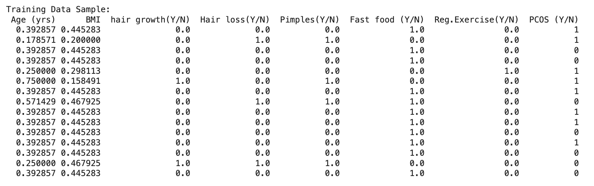

üìä Regression Questions and Overview
1️⃣ What is Regression?
Regression is a type of supervised machine learning algorithm used to predict a continuous outcome variable based on one or more input features.
It helps identify relationships between variables and can estimate trends or outcomes. In the context of healthcare, regression can help predict the likelihood of a condition based on clinical indicators.
Common types include Linear Regression and Logistic Regression depending on the nature of the target variable.
2️⃣ What Makes Regression Supervised?
Regression is considered a supervised learning technique because it trains the model on labeled data, where both the input features and the target outcome are known.
The model learns a mapping function from inputs to outputs.
Once trained, it can then predict outcomes for new, unseen data.
3️⃣ What Is It Used For?
Regression is used for forecasting and estimating numeric outcomes.
For example, it can be used to predict PCOS likelihood, BMI changes, blood pressure, or hormone levels.
In classification tasks like ours, Logistic Regression is used to estimate the probability of class membership (e.g., PCOS or not).
4️⃣ What Is the Output?
The output of a regression model is a numeric prediction.
In Linear Regression, the output is a continuous value like weight or temperature.
In Logistic Regression, the output is a probability between 0 and 1, which can be interpreted as a classification decision when a threshold (like 0.5) is applied.
5️⃣ What Kind of Data Works Best?
Regression models work best with numerical data that has meaningful relationships between input variables and outcomes.
Logistic Regression is especially suited for binary or categorical outcomes with independent numerical or encoded features.
Clean, well-preprocessed, and non-redundant data improves performance and model accuracy.
üìà Access Full Regression Code on GitHub
The full implementation of Logistic and Multinomial Regression models — including data preprocessing, model training, evaluation, and visualization — is available on GitHub.
View Regression Code on GitHub
üõ†Ô∏è Regression Data Preparation & Code
1️⃣ Cleaned Dataset
For this regression task, we worked with the Core PCOS Dataset and prepared it using the following preprocessing steps:
- Whitespace was removed from column names for consistency.
- Relevant features were selected: Age (yrs), BMI, Hair growth(Y/N), Hair loss(Y/N), Pimples(Y/N), Fast food(Y/N), and Reg.Exercise(Y/N).
- All categorical features with
Y/N values were converted to binary (0 = No, 1 = Yes).
- Numerical columns like Age and BMI were normalized using Min-Max Scaling for improved regression model performance.
Below is a sample preview of the cleaned and scaled dataset before splitting:
2️⃣ Train-Test Split
The dataset was split into 80% training and 20% testing using train_test_split from scikit-learn.
This ensures that the model learns from one part of the data and is tested on unseen examples to evaluate generalization.
Training Data Sample:

Testing Data Sample:
The following output confirms the shapes of the train and test sets. This helps ensure a proper distribution of data and prevents data leakage between training and testing.
üìà Regression Results and Conclusions
After training and testing both the Logistic Regression and Multinomial Naïve Bayes models, we evaluated their performance
using accuracy scores and confusion matrices to understand how well each model performed in classifying PCOS.
1️⃣ Confusion Matrices & Accuracy Scores
Logistic Regression

Accuracy: 0.76
Explanation: Logistic Regression demonstrated slightly better performance with 25 true positives and 140 true negatives.
It misclassified fewer PCOS patients compared to Multinomial NB.
Multinomial Naïve Bayes

Accuracy: 0.75
Explanation: Multinomial NB showed slightly lower performance, correctly identifying 21 PCOS cases and 141 non-PCOS cases.
It had a higher number of false negatives compared to Logistic Regression.
2️⃣ Comparison Table
| Model |
Accuracy |
True Positives |
True Negatives |
False Positives |
False Negatives |
| Logistic Regression |
0.76 |
25 |
140 |
8 |
44 |
| Multinomial Naïve Bayes |
0.75 |
21 |
141 |
7 |
48 |
üîç What Did We Learn?
In our regression-based modeling for PCOS classification, both Logistic Regression and Multinomial Naïve Bayes achieved fairly similar results, with accuracy scores of 0.76 and 0.75, respectively. However, Logistic Regression was able to correctly identify more PCOS cases and slightly reduced the number of false negatives.
From this, we learned that Logistic Regression is a better fit for our PCOS dataset because it handles continuous variables well and does not rely on the strong assumption of feature independence like Naïve Bayes. It also provides coefficients that help in understanding the influence of each feature on the outcome.
On the other hand, Multinomial Naïve Bayes assumes features represent discrete counts (like word frequency in NLP), which doesn't align well with the clinical and scaled continuous data in our project. While it's fast and easy to interpret, its performance slightly lags behind Logistic Regression in this context.
✅ Key Takeaway: For clinical prediction tasks with a mix of binary and scaled continuous features, Logistic Regression is more robust and provides higher sensitivity — which is crucial for reducing the risk of missed diagnoses in PCOS detection.